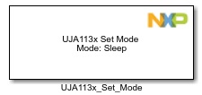
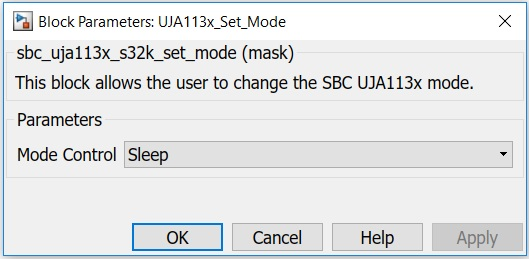

UJA113x Set Mode Block
UJA113x Set Mode performs software transition from one mode to another. The transition is achieved by writing to mode control register. The event capture registers are cleared before device is moved to sleep mode.
Block Image
Inputs:
- None
Outputs:
- None
Parameters and Dialog Box
The block has one parameter:
Mode Control
Normal mode is the active SBC operating mode. In this mode, the SBC is fully operational and all onboard hardware can be activated. Normal mode can be selected from Standby mode.
The SBC immediately exists .Normal mode if:
Standby mode is a low-power mode in which regulator V1 is switched on.
Sleep mode is a low-power mode similar to Standby mode. However, V1 is switched off in Sleep mode.
Block Dependency
Please do the following:
- Configure the UJA113x Configuration block.
- Configure the LPSPI Configuration block.
Block Miscellaneous Details
- None
* To get more information refer to Hardware Manual documentation.